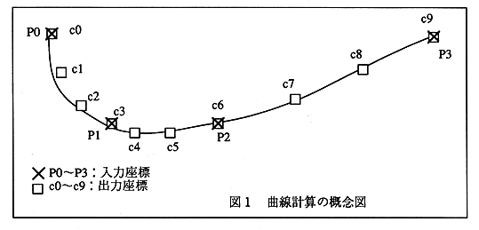

Return to previous page ｜ Return to menu ｜ Go to next page
-
- Spline curve calculation processing
This curve calculation function uses a cubic spline curve and has the following characteristics.
(1) Support 2D and 3D coordinates
(2) Tangential vector at each output coordinate can be obtained
As shown in Figure 1, by specifying a few points, you can obtain points on the curve that pass smoothly through those points. Figure 1 shows that if you specify the input coordinate array P0 ~ 3, the array number 4 and the output coordinate number 10 you can obtain the output coordinate array that passes smoothly through the points as c0 ~ 9. In addition, the tangent vector at each output coordinate can be obtained by using the tangent function. Tangent vectors can be used for the character's direction of travel.

- Fixed point arithmetic
There are routines and macros that perform multiplication / division of 32-bit fixed-point data (16-bit integer part + 16-bit decimal part) and mutual type conversion with integer and floating-point data.
- Other functions
Other numerical calculation functions other than the above.
Return to previous page ｜ Return to menu ｜ Go to next page